위탁 상세페이지 · 썸네일 승인 · 카드 25개 ·
새 공통 상세 5종과 위탁 상품 썸네일 20개를 현재/새 이미지로 비교해요. 승인을 눌러도 이 단계에서는 아무 것도 바뀌지 않고, 별도 단계(1개 -> 5개 -> 전체)로 적용돼요. 이 이미지에는 금액·할인 문구가 없어요.
보류 중 (카드 없음, 이유)
- P410 빈티지 애쉬 5현 / P394 F10 DX: 재고 0 (색상 근거 없음)
- P420 V7 4현 · P421 V3 · P545 · P585: 자사 재고 상품이라 이번 위탁 작업에서 제외
- V10 4현 (NT.S): 색상 소스 없음
- 스윙 JD4: 색상 세트 키 없음
- 데임 VS7 · LP5, 고퍼우드 J6: 색상별 근거 자료 없음
- 콜트 G250 AW: AW 색상 이미지 없음 -> 5색 중 4색만 표시 (카드에 표시)
1. 새 공통 상세페이지 - 베이스 · 직발송 옵션 있음 (사이어)
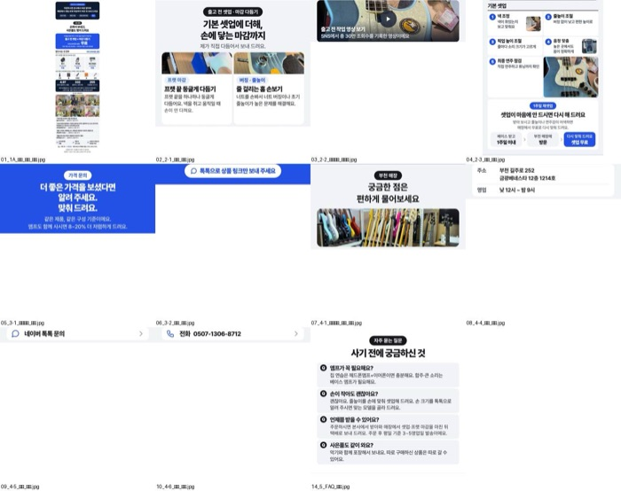
현재(10-28판 조각들)새 판 (스크롤)적용 상품 10개: 헤드폰앰프지급 사이어 마커스 밀러 F10 6현 전색상 베이스기타 힙베이스 / 헤드폰앰프지급 사이어 마커스 밀러 F10 DC 4현 전색상 베이스기타 힙 / 헤드폰앰프지급 사이어 마커스 밀러 M6 4현 헤드리스 전색상 베이스기타 / 헤드폰앰프지급 사이어 마커스 밀러 V7 5현 뉴젠(NEW GEN) 전색상 ...
마케터 PASS - 과정·기록 카드·사은품·후기(별점 4.97, 리뷰 332)·FAQ까지 한 흐름으로 구매 불안을 줄여요. 근거: 10-28판 비교 (자사 베이스 대비 미확인). 전환 실측 전.
디자이너 PASS - 860 폭 모바일 이미지, 섹션 간격 일정, 잘림 없음 (미리보기 직접 확인).
구매자 PASS - 어떻게 셋업돼서 오는지, 뭐가 같이 오는지, 직발송과 힙베이스 셋업 차이, 문의 방법이 보여요.
2. 새 공통 상세페이지 - 베이스 · 셋업 후 발송만 (사도스키: 공급사 확인 전이라 보수적으로 직발송 옵션 없음)
적용 상품 4개: 헤드폰앰프지급 사도스키 메트로익스프레스 5현 PJ 하이브리드 전색상 베이 / 헤드폰앰프지급 사도스키 메트로익스프레스 24프렛 4현 모던 베이스 전색상 / 헤드폰앰프지급 사도스키 메트로익스프레스 4현 JJ 재즈베이스 전색상 베이 / 헤드폰앰프지급 사도스키 메트로익스프레스 4현 PJ 하이브리드 전색상 베이
마케터 PASS - 과정·기록 카드·사은품·후기(별점 4.97, 리뷰 332)·FAQ까지 한 흐름으로 구매 불안을 줄여요. 근거: 10-28판 비교 (자사 베이스 대비 미확인). 전환 실측 전.
디자이너 PASS - 860 폭 모바일 이미지, 섹션 간격 일정, 잘림 없음 (미리보기 직접 확인).
구매자 PASS - 어떻게 셋업돼서 오는지, 뭐가 같이 오는지, 직발송과 힙베이스 셋업 차이, 문의 방법이 보여요.
3. 새 공통 상세페이지 - 일렉 · 직발송 옵션 있음 (헥스)
적용 상품 1개: 헥스 N500 LHLH 일렉기타 전색상 힙베이스
마케터 PASS - 과정·기록 카드·사은품·후기(별점 4.97, 리뷰 332)·FAQ까지 한 흐름으로 구매 불안을 줄여요. 근거: 10-28판 비교 (자사 베이스 대비 미확인). 전환 실측 전.
디자이너 PASS - 860 폭 모바일 이미지, 섹션 간격 일정, 잘림 없음 (미리보기 직접 확인).
구매자 PASS - 어떻게 셋업돼서 오는지, 뭐가 같이 오는지, 직발송과 힙베이스 셋업 차이, 문의 방법이 보여요.
4. 새 공통 상세페이지 - 일렉 · 셋업 후 발송만 (콜트)
적용 상품 2개: 콜트 G250 일렉기타 전색상 힙베이스 / 콜트 G300 PRO 일렉기타 전색상 힙베이스
마케터 PASS - 과정·기록 카드·사은품·후기(별점 4.97, 리뷰 332)·FAQ까지 한 흐름으로 구매 불안을 줄여요. 근거: 10-28판 비교 (자사 베이스 대비 미확인). 전환 실측 전.
디자이너 PASS - 860 폭 모바일 이미지, 섹션 간격 일정, 잘림 없음 (미리보기 직접 확인).
구매자 PASS - 어떻게 셋업돼서 오는지, 뭐가 같이 오는지, 직발송과 힙베이스 셋업 차이, 문의 방법이 보여요.
5. 새 공통 상세페이지 - 통기타 · 직발송 옵션 있음 (고퍼우드)
적용 상품 3개: 고퍼우드 K330RCE 통기타 어쿠스틱 기타 전색상 힙베이스 / 고퍼우드 i720MCE 통기타 어쿠스틱 기타 힙베이스 / 고퍼우드 K830RCE 통기타 어쿠스틱 기타 힙베이스
마케터 PASS - 과정·기록 카드·사은품·후기(별점 4.97, 리뷰 332)·FAQ까지 한 흐름으로 구매 불안을 줄여요. 근거: 10-28판 비교 (자사 베이스 대비 미확인). 전환 실측 전.
디자이너 PASS - 860 폭 모바일 이미지, 섹션 간격 일정, 잘림 없음 (미리보기 직접 확인).
구매자 PASS - 어떻게 셋업돼서 오는지, 뭐가 같이 오는지, 직발송과 힙베이스 셋업 차이, 문의 방법이 보여요.
6. 헤드폰앰프지급 사이어 마커스 밀러 F10 6현 전색상 베이스기타 힙베이스
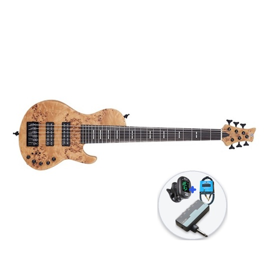
현재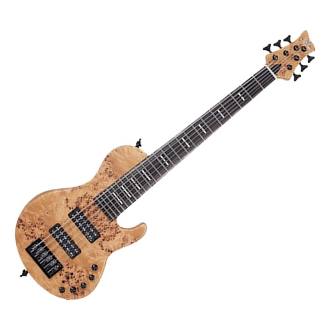
새 이미지들어간 색 NT.S (내추럴 새틴)
마케터 마케터 PASS - 판매 중인 색 1개를 한 장에 보여 색 고민을 줄여요 (근거: 색상 옵션 목록과 썸네일 규칙, 클릭률은 적용 후 7일 비교 전이라 아직 실측 없음).
디자이너 디자이너 PASS - 흰 1080 정사각, 글자·금액 없음, 악기가 화면의 74.9%를 채워 모바일 목록에서도 보여요.
구매자 구매자 PASS - 팔고 있는 1색이 한눈에 보여요.
7. 헤드폰앰프지급 사이어 마커스 밀러 F10 DC 4현 전색상 베이스기타 힙베이스
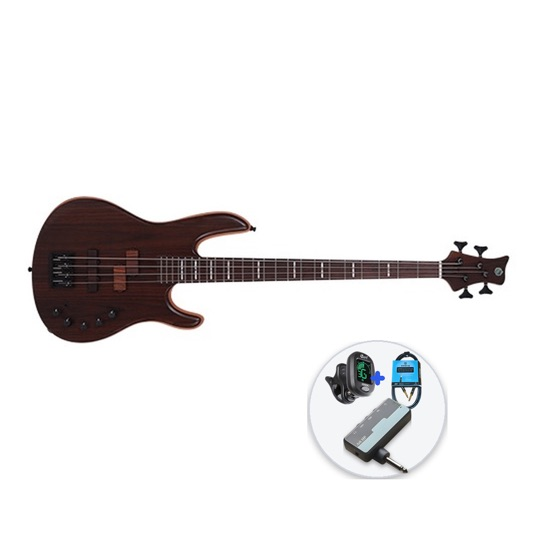
현재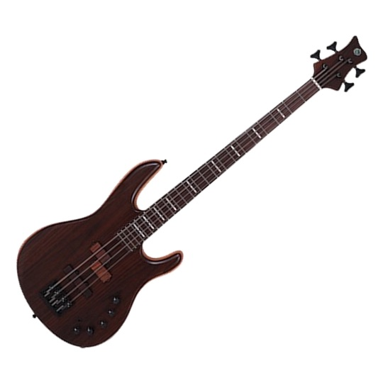
새 이미지들어간 색 NT (내추럴)
마케터 마케터 PASS - 판매 중인 색 1개를 한 장에 보여 색 고민을 줄여요 (근거: 색상 옵션 목록과 썸네일 규칙, 클릭률은 적용 후 7일 비교 전이라 아직 실측 없음).
디자이너 디자이너 PASS - 흰 1080 정사각, 글자·금액 없음, 악기가 화면의 75.0%를 채워 모바일 목록에서도 보여요.
구매자 구매자 PASS - 팔고 있는 1색이 한눈에 보여요.
8. 헤드폰앰프지급 사도스키 메트로익스프레스 5현 PJ 하이브리드 전색상 베이스기타 힙베이스
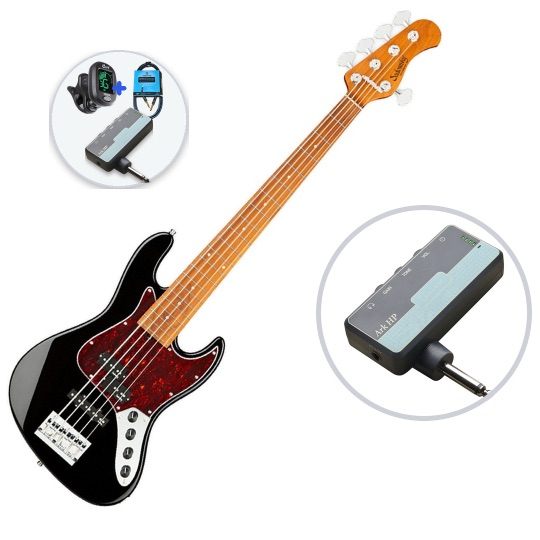
현재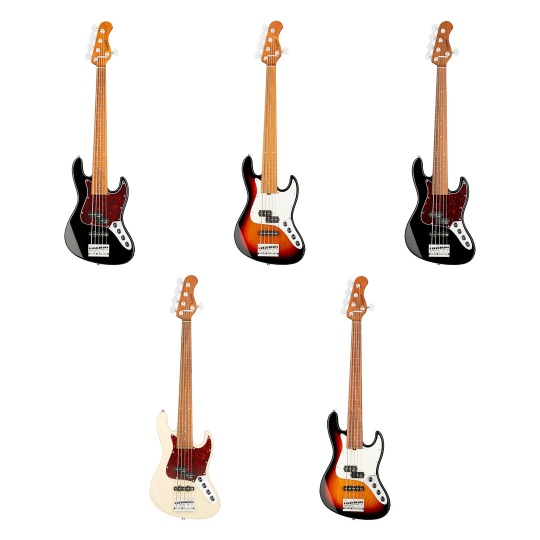
새 이미지들어간 색 로스티드메이플 / 블랙, 로스티드메이플 / 썬버스트, 모라도 / 블랙, 모라도 / 올림픽 화이트, 모라도 / 썬버스트
마케터 마케터 PASS - 판매 중인 색 5개를 한 장에 보여 색 고민을 줄여요 (근거: 색상 옵션 목록과 썸네일 규칙, 클릭률은 적용 후 7일 비교 전이라 아직 실측 없음).
디자이너 디자이너 PASS - 흰 1080 정사각, 글자·금액 없음, 악기가 화면의 70.5%를 채워 모바일 목록에서도 보여요.
구매자 구매자 PASS - 팔고 있는 5색이 한눈에 보여요.
9. 헤드폰앰프지급 사도스키 메트로익스프레스 24프렛 4현 모던 베이스 전색상 베이스기타 힙베이스
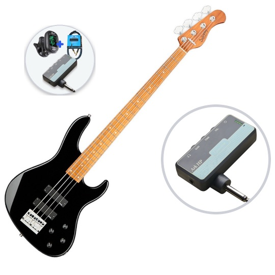
현재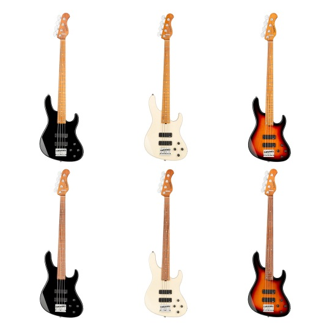
새 이미지들어간 색 로스티드메이플 / 블랙, 로스티드메이플 / 올림픽 화이트, 로스티드메이플 / 썬버스트, 모라도 / 블랙, 모라도 / 올림픽 화이트, 모라도 / 썬버스트
마케터 마케터 PASS - 판매 중인 색 6개를 한 장에 보여 색 고민을 줄여요 (근거: 색상 옵션 목록과 썸네일 규칙, 클릭률은 적용 후 7일 비교 전이라 아직 실측 없음).
디자이너 디자이너 PASS - 흰 1080 정사각, 글자·금액 없음, 악기가 화면의 70.3%를 채워 모바일 목록에서도 보여요.
구매자 구매자 PASS - 팔고 있는 6색이 한눈에 보여요.
10. 헤드폰앰프지급 사도스키 메트로익스프레스 4현 JJ 재즈베이스 전색상 베이스기타 힙베이스
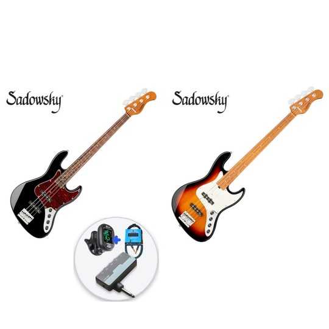
현재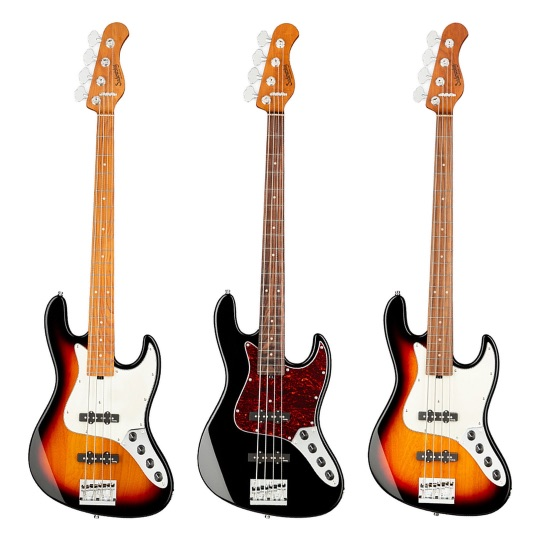
새 이미지들어간 색 로스티드메이플 / 썬버스트, 모라도 / 블랙, 모라도 / 썬버스트
마케터 마케터 PASS - 판매 중인 색 3개를 한 장에 보여 색 고민을 줄여요 (근거: 색상 옵션 목록과 썸네일 규칙, 클릭률은 적용 후 7일 비교 전이라 아직 실측 없음).
디자이너 디자이너 PASS - 흰 1080 정사각, 글자·금액 없음, 악기가 화면의 82.4%를 채워 모바일 목록에서도 보여요.
구매자 구매자 PASS - 팔고 있는 3색이 한눈에 보여요.
11. 헤드폰앰프지급 사도스키 메트로익스프레스 4현 PJ 하이브리드 전색상 베이스기타 힙베이스
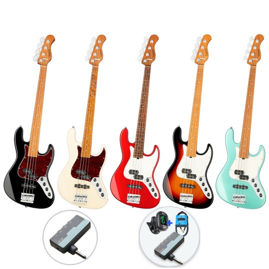
현재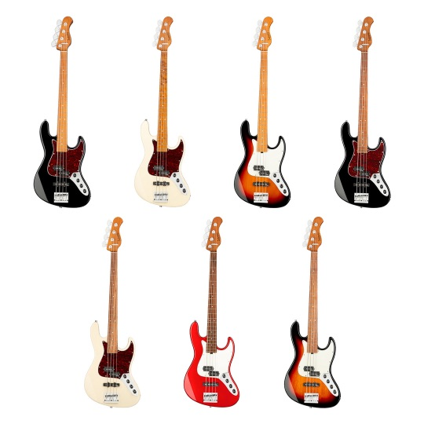
새 이미지들어간 색 로스티드메이플 / 블랙, 로스티드메이플 / 올림픽 화이트, 로스티드메이플 / 썬버스트, 모라도 / 블랙, 모라도 / 올림픽 화이트, 모라도 / 캔디 애플레드, 모라도 / 썬버스트
마케터 마케터 PASS - 판매 중인 색 7개를 한 장에 보여 색 고민을 줄여요 (근거: 색상 옵션 목록과 썸네일 규칙, 클릭률은 적용 후 7일 비교 전이라 아직 실측 없음).
디자이너 디자이너 PASS - 흰 1080 정사각, 글자·금액 없음, 악기가 화면의 77.9%를 채워 모바일 목록에서도 보여요.
구매자 구매자 주의 - 9색 중 빠진 색: 로스티드메이플 / 세이지 그린, 모라도 / 세이지 그린 (이미지 없음). 승인 전 확인 필요.
12. 헤드폰앰프지급 사이어 마커스 밀러 M6 4현 헤드리스 전색상 베이스기타 힙베이스
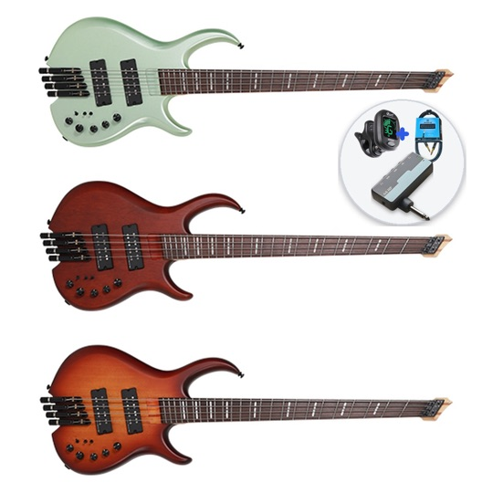
현재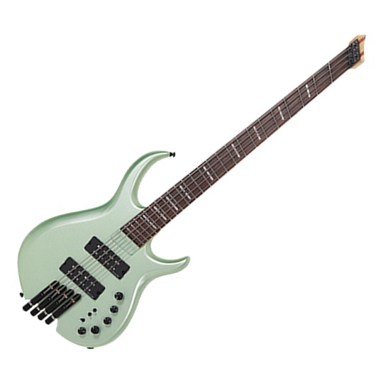
새 이미지들어간 색 SGM.S
마케터 마케터 PASS - 판매 중인 색 1개를 한 장에 보여 색 고민을 줄여요 (근거: 색상 옵션 목록과 썸네일 규칙, 클릭률은 적용 후 7일 비교 전이라 아직 실측 없음).
디자이너 디자이너 PASS - 흰 1080 정사각, 글자·금액 없음, 악기가 화면의 74.8%를 채워 모바일 목록에서도 보여요.
구매자 구매자 PASS - 팔고 있는 1색이 한눈에 보여요.
13. 헤드폰앰프지급 사이어 마커스 밀러 V7 5현 뉴젠(NEW GEN) 전색상 베이스기타 힙베이스
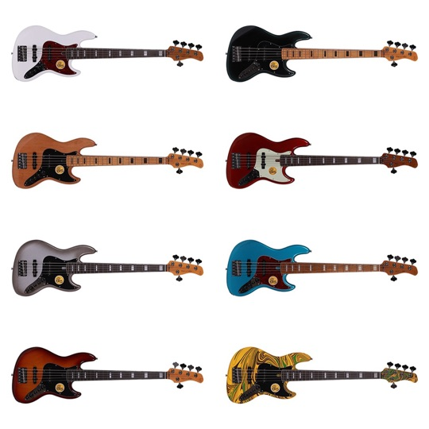
현재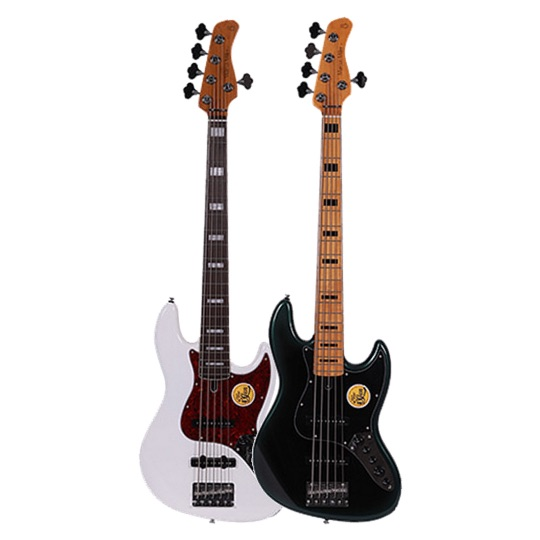
새 이미지들어간 색 AWH (앤티크 화이트), Dark Forest (다크 포레스트)
마케터 마케터 PASS - 판매 중인 색 2개를 한 장에 보여 색 고민을 줄여요 (근거: 색상 옵션 목록과 썸네일 규칙, 클릭률은 적용 후 7일 비교 전이라 아직 실측 없음).
디자이너 디자이너 PASS - 흰 1080 정사각, 글자·금액 없음, 악기가 화면의 45.9%를 채워 모바일 목록에서도 보여요.
구매자 구매자 PASS - 팔고 있는 2색이 한눈에 보여요.
14. 헤드폰앰프지급 사이어 마커스 밀러 V5R 5현 전색상 베이스기타 힙베이스
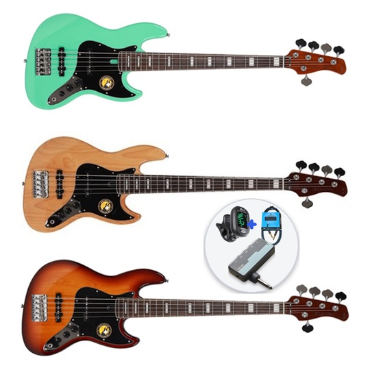
현재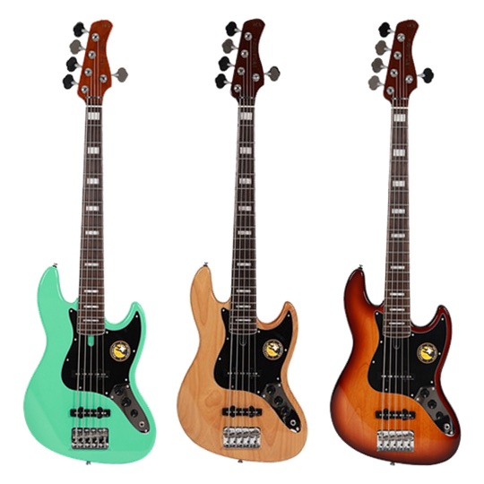
새 이미지들어간 색 MLG (마일드 그린), NT (내추럴), TS (타바코 선버스트)
마케터 마케터 PASS - 판매 중인 색 3개를 한 장에 보여 색 고민을 줄여요 (근거: 색상 옵션 목록과 썸네일 규칙, 클릭률은 적용 후 7일 비교 전이라 아직 실측 없음).
디자이너 디자이너 PASS - 흰 1080 정사각, 글자·금액 없음, 악기가 화면의 83.8%를 채워 모바일 목록에서도 보여요.
구매자 구매자 PASS - 팔고 있는 3색이 한눈에 보여요.
15. 콜트 G250 일렉기타 전색상 힙베이스
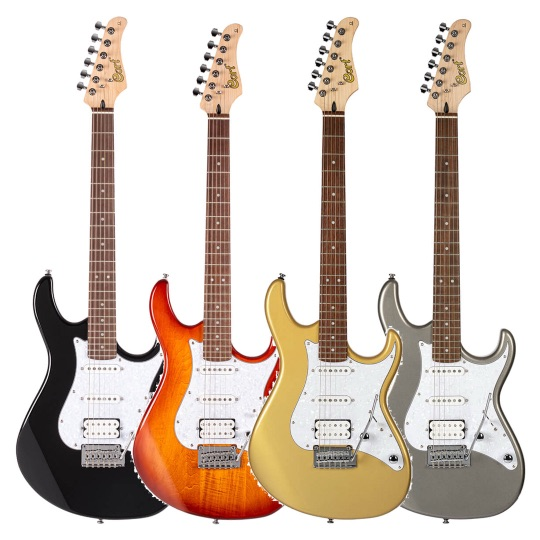
현재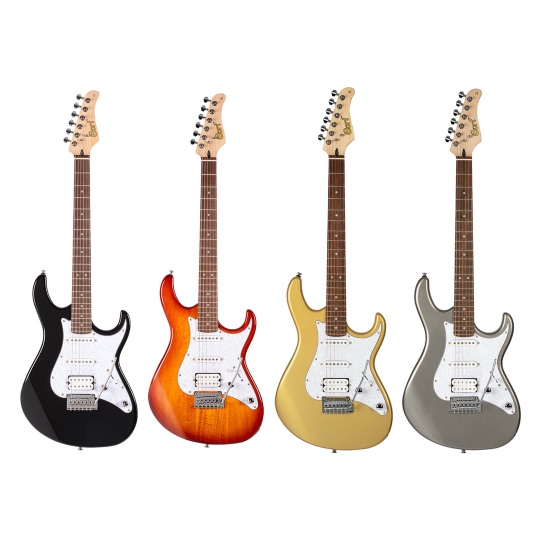
새 이미지들어간 색 BK, TAB, CGM, SVM
마케터 마케터 PASS - 판매 중인 색 4개를 한 장에 보여 색 고민을 줄여요 (근거: 색상 옵션 목록과 썸네일 규칙, 클릭률은 적용 후 7일 비교 전이라 아직 실측 없음).
디자이너 디자이너 PASS - 흰 1080 정사각, 글자·금액 없음, 악기가 화면의 62.8%를 채워 모바일 목록에서도 보여요.
구매자 구매자 주의 - 5색 중 빠진 색: AW (이미지 없음). 승인 전 확인 필요.
16. 콜트 G300 PRO 일렉기타 전색상 힙베이스
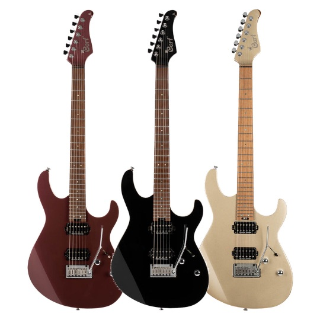
현재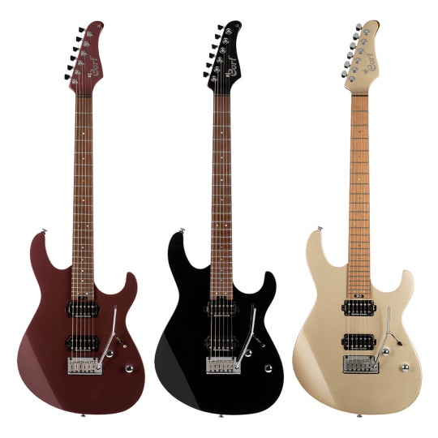
새 이미지들어간 색 VVB, BK, MGD
마케터 마케터 PASS - 판매 중인 색 3개를 한 장에 보여 색 고민을 줄여요 (근거: 색상 옵션 목록과 썸네일 규칙, 클릭률은 적용 후 7일 비교 전이라 아직 실측 없음).
디자이너 디자이너 PASS - 흰 1080 정사각, 글자·금액 없음, 악기가 화면의 84.0%를 채워 모바일 목록에서도 보여요.
구매자 구매자 PASS - 팔고 있는 3색이 한눈에 보여요.
17. 헥스 N500 LHLH 일렉기타 전색상 힙베이스
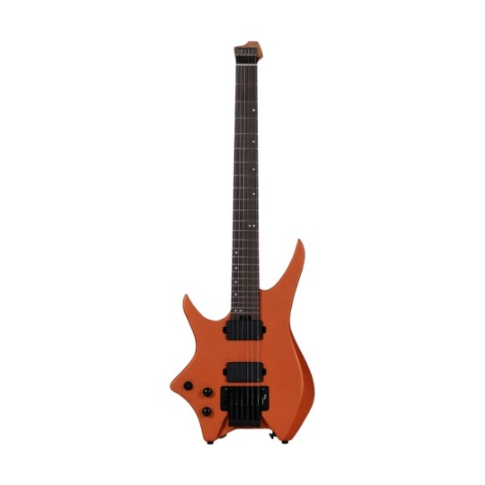
현재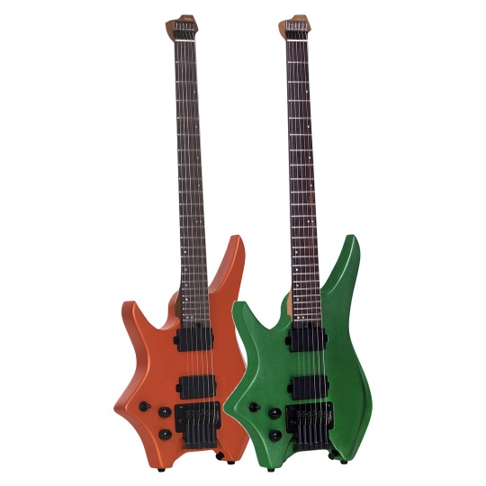
새 이미지들어간 색 (thumbcolor1103 tile)
마케터 마케터 PASS - 판매 중인 색 1개를 한 장에 보여 색 고민을 줄여요 (근거: 색상 옵션 목록과 썸네일 규칙, 클릭률은 적용 후 7일 비교 전이라 아직 실측 없음).
디자이너 디자이너 PASS - 흰 1080 정사각, 글자·금액 없음.
구매자 구매자 PASS - 팔고 있는 1색이 한눈에 보여요.
18. 고퍼우드 K330RCE 통기타 어쿠스틱 기타 전색상 힙베이스
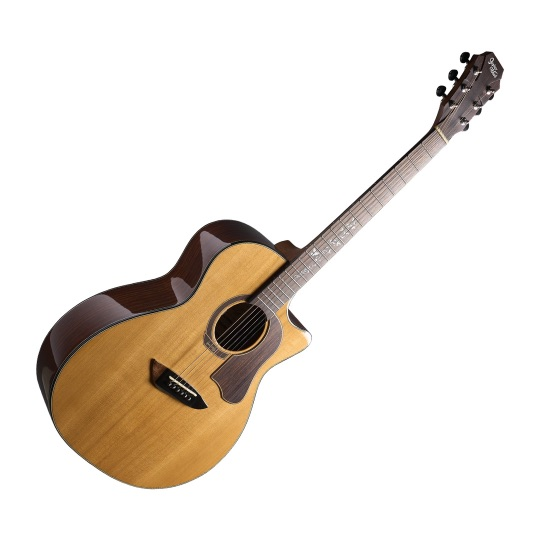
현재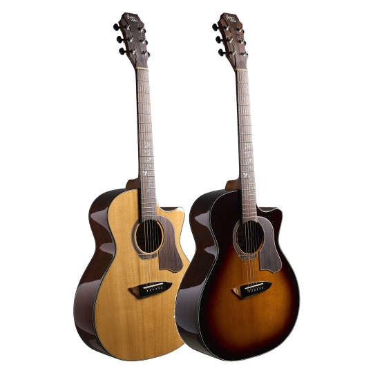
새 이미지들어간 색 (thumbcolor1103 tile)
마케터 마케터 PASS - 판매 중인 색 1개를 한 장에 보여 색 고민을 줄여요 (근거: 색상 옵션 목록과 썸네일 규칙, 클릭률은 적용 후 7일 비교 전이라 아직 실측 없음).
디자이너 디자이너 PASS - 흰 1080 정사각, 글자·금액 없음.
구매자 구매자 PASS - 팔고 있는 1색이 한눈에 보여요.
19. 고퍼우드 i720MCE 통기타 어쿠스틱 기타 힙베이스
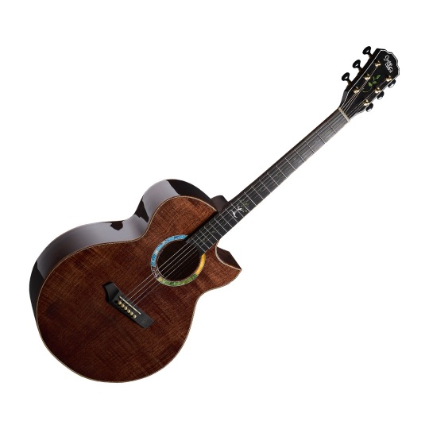
현재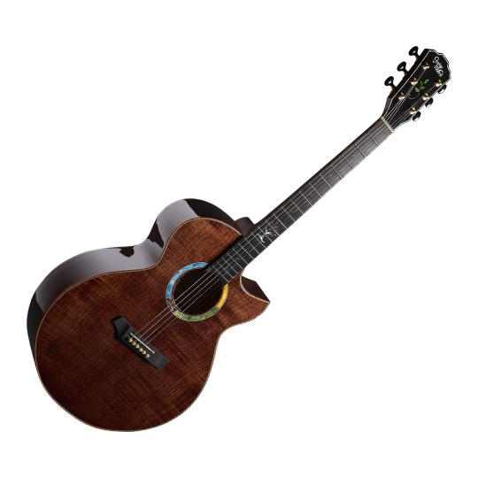
새 이미지들어간 색 기본(단일색)
마케터 마케터 PASS - 판매 중인 색 1개를 한 장에 보여 색 고민을 줄여요 (근거: 색상 옵션 목록과 썸네일 규칙, 클릭률은 적용 후 7일 비교 전이라 아직 실측 없음).
디자이너 디자이너 PASS - 흰 1080 정사각, 글자·금액 없음.
구매자 구매자 PASS - 팔고 있는 1색이 한눈에 보여요.
20. 고퍼우드 K830RCE 통기타 어쿠스틱 기타 힙베이스
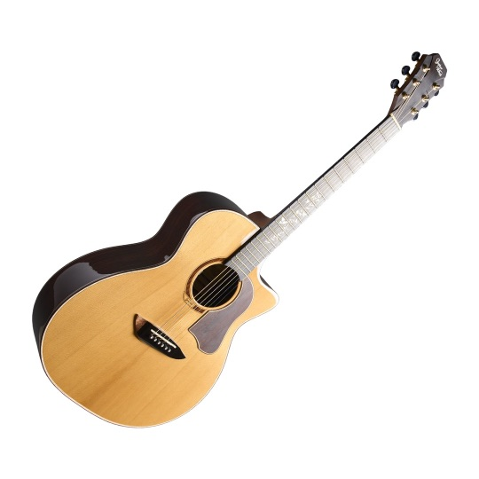
현재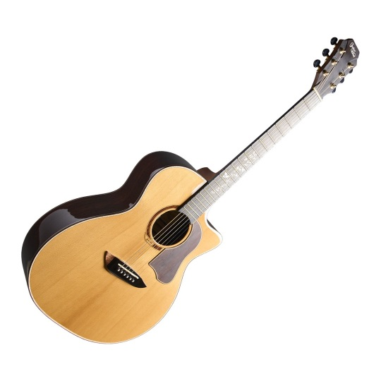
새 이미지들어간 색 기본(단일색)
마케터 마케터 PASS - 판매 중인 색 1개를 한 장에 보여 색 고민을 줄여요 (근거: 색상 옵션 목록과 썸네일 규칙, 클릭률은 적용 후 7일 비교 전이라 아직 실측 없음).
디자이너 디자이너 PASS - 흰 1080 정사각, 글자·금액 없음.
구매자 구매자 PASS - 팔고 있는 1색이 한눈에 보여요.
21. 헤드폰앰프지급 사이어 마커스 밀러 V7 앨더 5현 2세대 전색상 베이스기타 힙베이스
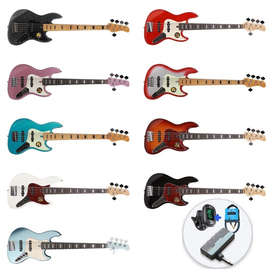
현재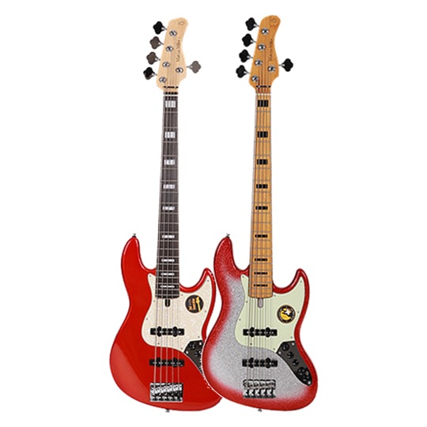
새 이미지들어간 색 BMR (브라이트 메탈릭 레드), Redburst.SP (레드버스트 스파클)
마케터 마케터 PASS - 판매 중인 색 2개를 한 장에 보여 색 고민을 줄여요 (근거: 색상 옵션 목록과 썸네일 규칙, 클릭률은 적용 후 7일 비교 전이라 아직 실측 없음).
디자이너 디자이너 PASS - 흰 1080 정사각, 글자·금액 없음, 악기가 화면의 45.8%를 채워 모바일 목록에서도 보여요.
구매자 구매자 PASS - 팔고 있는 2색이 한눈에 보여요.
22. 헤드폰앰프지급 사이어 마커스 밀러 P7 4현 2세대 전색상 베이스기타 힙베이스
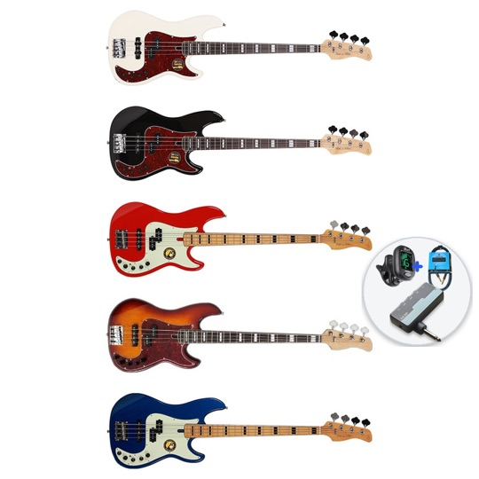
현재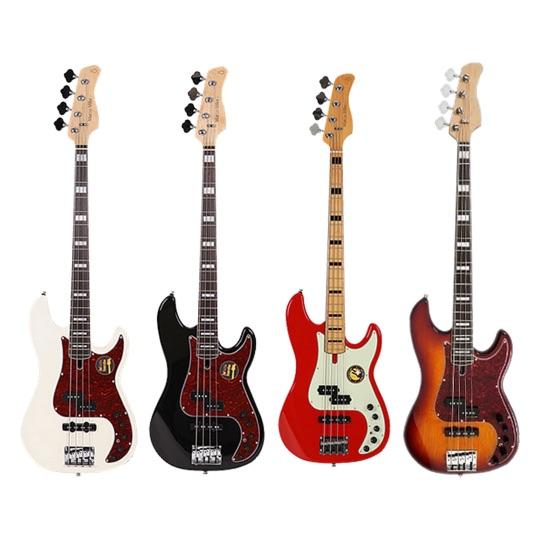
새 이미지들어간 색 AWH (앤티크 화이트), BK (블랙), RED (레드), TS (타바코 선버스트)
마케터 마케터 PASS - 판매 중인 색 4개를 한 장에 보여 색 고민을 줄여요 (근거: 색상 옵션 목록과 썸네일 규칙, 클릭률은 적용 후 7일 비교 전이라 아직 실측 없음).
디자이너 디자이너 PASS - 흰 1080 정사각, 글자·금액 없음, 악기가 화면의 71.1%를 채워 모바일 목록에서도 보여요.
구매자 구매자 주의 - 5색 중 빠진 색: D.Navy (다크 네이비) (이미지 없음). 승인 전 확인 필요.
23. 헤드폰앰프지급 사이어 마커스 밀러 V5 5현 전색상 베이스기타 힙베이스
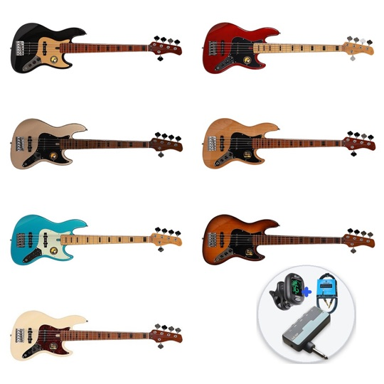
현재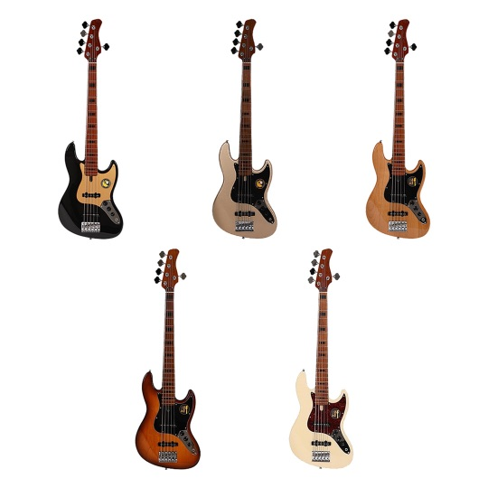
새 이미지들어간 색 BK (블랙), CGM (샴페인 골드 메탈릭), NT (내추럴), TS (타바코 선버스트), VWH (빈티지 화이트)
마케터 마케터 PASS - 판매 중인 색 5개를 한 장에 보여 색 고민을 줄여요 (근거: 색상 옵션 목록과 썸네일 규칙, 클릭률은 적용 후 7일 비교 전이라 아직 실측 없음).
디자이너 디자이너 PASS - 흰 1080 정사각, 글자·금액 없음, 악기가 화면의 70.5%를 채워 모바일 목록에서도 보여요.
구매자 구매자 PASS - 팔고 있는 5색이 한눈에 보여요.
24. 헤드폰앰프지급 사이어 마커스 밀러 P5 5현 전색상 베이스기타 힙베이스
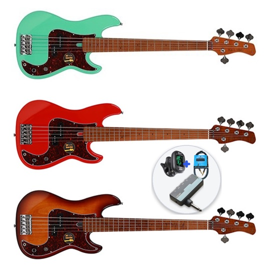
현재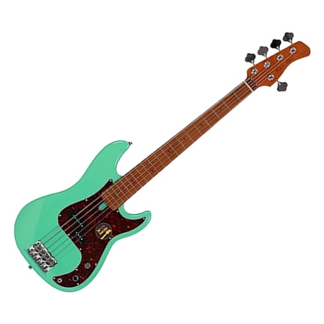
새 이미지들어간 색 Mild GR (마일드 그린)
마케터 마케터 PASS - 판매 중인 색 1개를 한 장에 보여 색 고민을 줄여요 (근거: 색상 옵션 목록과 썸네일 규칙, 클릭률은 적용 후 7일 비교 전이라 아직 실측 없음).
디자이너 디자이너 PASS - 흰 1080 정사각, 글자·금액 없음, 악기가 화면의 73.8%를 채워 모바일 목록에서도 보여요.
구매자 구매자 주의 - 2색 중 빠진 색: MGO (이미지 없음). 승인 전 확인 필요.
25. 헤드폰앰프지급 사이어 마커스 밀러 V7 빈티지 앨더 5현 2세대 전색상 베이스기타 힙베이스
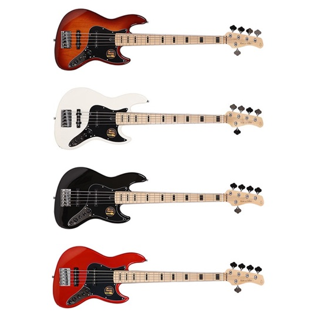
현재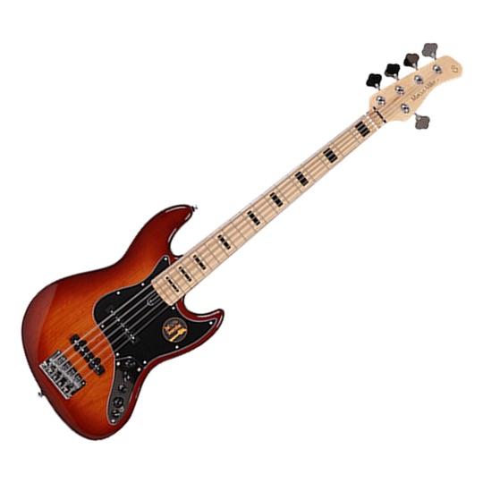
새 이미지들어간 색 TS (타바코 선버스트)
마케터 마케터 PASS - 판매 중인 색 1개를 한 장에 보여 색 고민을 줄여요 (근거: 색상 옵션 목록과 썸네일 규칙, 클릭률은 적용 후 7일 비교 전이라 아직 실측 없음).
디자이너 디자이너 PASS - 흰 1080 정사각, 글자·금액 없음, 악기가 화면의 75.5%를 채워 모바일 목록에서도 보여요.
구매자 구매자 PASS - 팔고 있는 1색이 한눈에 보여요.